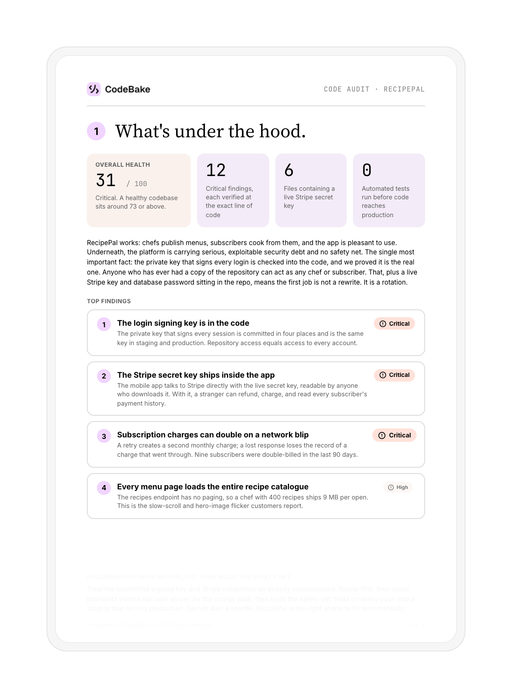
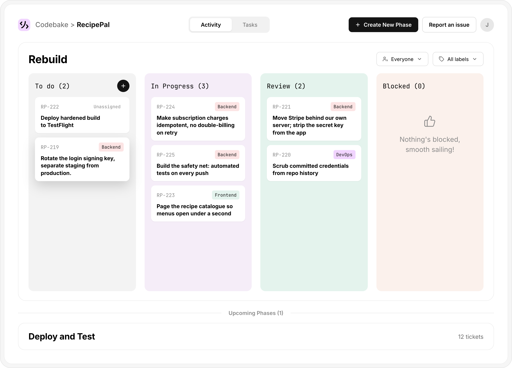
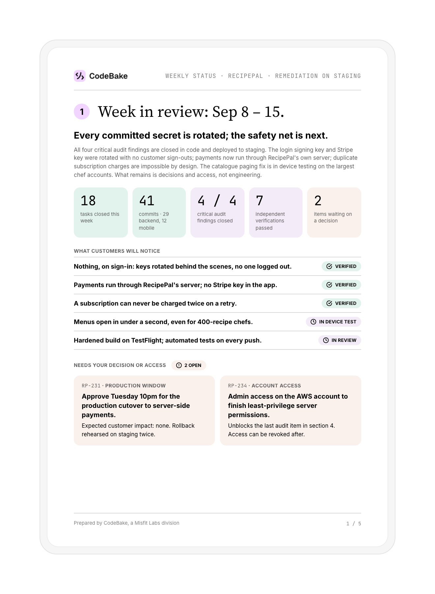

Find out what's really going on.
Security risks, nasty bugs, tickets stuck in the backlog — we'll explain it all in plain English. Then fix it.
Schedule your code audit


The questions that keep you
up at night.
Every team we've audited has wondered at least one of these. You don't have to keep guessing.
Schedule your code audit
What the audit turns up.
These aren't hypotheticals — they're pulled straight from real audits.
-
Security Issues
87 unpatched dependencies and exposed credentials sitting in production.
-
Technical Debt
8+ years of shortcuts that made every new feature slower to ship than the last.
-
Scalability Problems
System crashed at 50k users and multiple requests per second during testing.


How we bake it

Audit & Prep
We scope your codebase and walk you through exactly what the audit will cover, before anything starts.
Then we go line by line — security, scalability, technical debt — and hand you a clear, honest picture of where things stand.

Tune-up or Rebuild
Most of the time, your app doesn't need to be reinvented. It needs the issues from the audit closed, one by one.
We work through them behind the scenes — same look, same functionality, minus the problems.

Movin’ Forward
With a stable foundation, CodeBake keeps going — clearing the backlog of features and tickets that had been stuck for months.
No disappearing after the fix. You get ongoing progress, with regular updates on what shipped and what's next.



Ready to take control of your software?
Get a review of your existing codebase,
then a path forward.